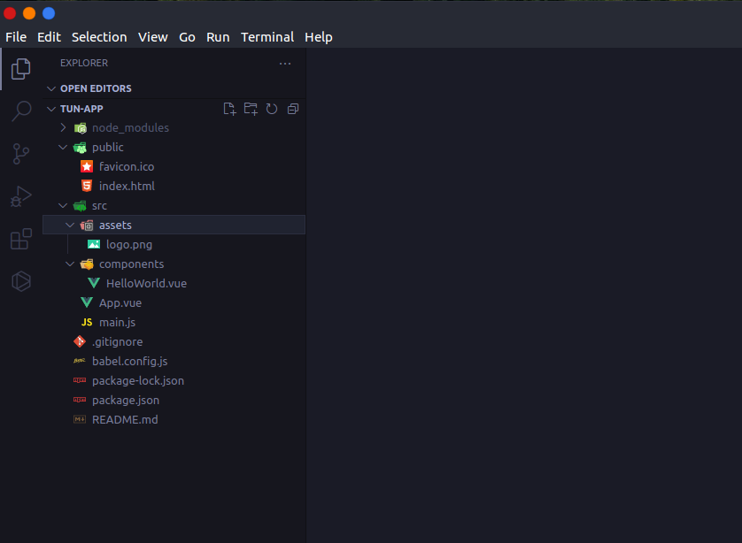
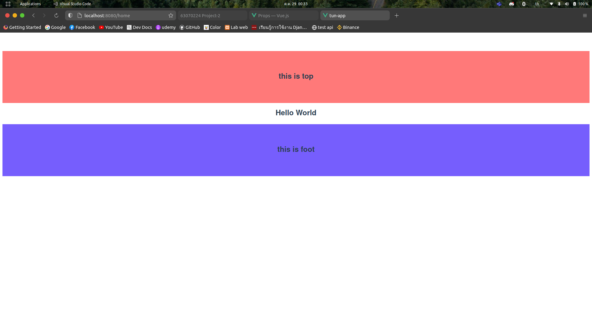
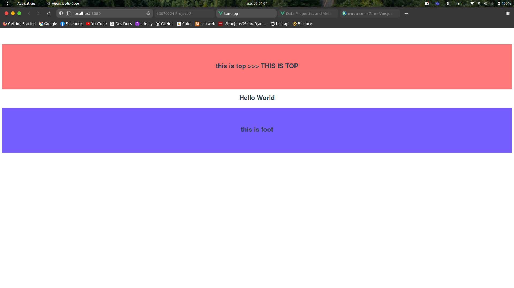

Vue.js เบื้องต้น
วิธีการใช้งาน Vue.js แบบเบื้องต้นที่ใครๆเริ่มทำได้
มาเริ่มสร้าง Project
หลังจากเรา run คำสั่ง
$ npm install -g @vue/cli
เราจะสามารถใช้งาน Vue.js CLI ได้แล้ว จากนั้นในการสร้าง project เราจะใช้คำสั่ง
$ vue create my-app //my-app คือชื่อโปรเจคของเรา
ซึ่งจะมีหน้าของ CLI มาให้เลือก preset ซึ่งจะแนะนำให้เลือก Vue 3 เพราะเป็นเวอร์ชั่นใหม่

เมื่อทำการสร้าง project เรียบร้อยแล้ว cd ไปที่ folder ของโปรเจค จากนั้นจะทำการ run
ทดสอบหน้า project
ของเราด้วยคำสั่งดังนี้
$ npm run serve

จากนั้นเข้า browser ไปตาม address ที่ปรากฎ จะได้หน้าตาดังนี้ นั่นหมายถึง Vue.js
สามารถใช้งานได้แล้ว

และหน้าตาของ Vue.js ใน project จะมีลักษณะดังนี้

Component & Props
จะเห็นได้ว่าทุกๆไฟล์ .vue จะประกอบด้วย สามสิ่งดังนี้
- - template
- - script
- - style
//app.vue
<template>
<img alt="Vue logo" src="./assets/logo.png" />
<HelloWorld msg="Hello" />
</template>
<script>
import HelloWorld from "./components/HelloWorld.vue";
export default {
name: "App",
components: {
HelloWorld,
},
};
</script>
<style>
#app {
font-family: Avenir, Helvetica, Arial, sans-serif;
-webkit-font-smoothing: antialiased;
-moz-osx-font-smoothing: grayscale;
text-align: center;
color: #2c3e50;
margin-top: 60px;
}
</style>
// HelloWorld.vue
<template>
<div class="hello">
<h1>{{ msg }}</h1>
<p>
For a guide and recipes on how to configure / customize this project,<br>
check out the
<a href="https://cli.vuejs.org" target="_blank" rel="noopener">vue-cli documentation</a>.
</p>
<h3>Installed CLI Plugins</h3>
<ul>
<li><a href="https://github.com/vuejs/vue-cli/tree/dev/packages/%40vue/cli-plugin-babel" target="_blank" rel="noopener">babel</a></li>
<li><a href="https://github.com/vuejs/vue-cli/tree/dev/packages/%40vue/cli-plugin-eslint" target="_blank" rel="noopener">eslint</a></li>
</ul>
<h3>Essential Links</h3>
<ul>
<li><a href="https://vuejs.org" target="_blank" rel="noopener">Core Docs</a></li>
<li><a href="https://forum.vuejs.org" target="_blank" rel="noopener">Forum</a></li>
<li><a href="https://chat.vuejs.org" target="_blank" rel="noopener">Community Chat</a></li>
<li><a href="https://twitter.com/vuejs" target="_blank" rel="noopener">Twitter</a></li>
<li><a href="https://news.vuejs.org" target="_blank" rel="noopener">News</a></li>
</ul>
<h3>Ecosystem</h3>
<ul>
<li><a href="https://router.vuejs.org" target="_blank" rel="noopener">vue-router</a></li>
<li><a href="https://vuex.vuejs.org" target="_blank" rel="noopener">vuex</a></li>
<li><a href="https://github.com/vuejs/vue-devtools#vue-devtools" target="_blank" rel="noopener">vue-devtools</a></li>
<li><a href="https://vue-loader.vuejs.org" target="_blank" rel="noopener">vue-loader</a></li>
<li><a href="https://github.com/vuejs/awesome-vue" target="_blank" rel="noopener">awesome-vue</a></li>
</ul>
</div>
</template>
<script>
export default {
name: 'HelloWorld',
props: {
msg: String
}
}
</script>
<!-- Add "scoped" attribute to limit CSS to this component only -->
<style scoped>
h3 {
margin: 40px 0 0;
}
ul {
list-style-type: none;
padding: 0;
}
li {
display: inline-block;
margin: 0 10px;
}
a {
color: #42b983;
}
</style>
จะเห็นได้ว่า App.vue มีการเรียกใช้ Component ที่ชื่อว่า HelloWorld นั่นคือ
เราสามารถเขียน Component เพิ่มเองได้ เพื่อเรียกใช้งานในครั้งต่อๆไป
ต่อไปเราจะมาลองเขียน
Component เพิ่มเอง คือ top กับ foot
//top.vue
<template>
<div class="top">
<h2>{{ msg }}</h2>
</div>
</template>
<script>>
export default {
name: "top",
props: {
msg: String,
},
};
</script>
<style>>
.top {
background-color: rgb(255, 121, 121);
padding: 50px;
}
</style>
//foot.vue
<template>
<div class="foot">
<h2>{{ msg }}</h2>
</div>
</template>
<script>
export default {
name: "foot",
props: {
msg: String,
},
};
</script>
<style>
.foot {
background-color: rgb(118, 94, 253);
padding: 50px;
}
</style>
เราจะสามารถกำหนด props ให้กับ component ได้ ซึ่ง component
ที่อยู่ขั้นสูงกว่าจะสามารถส่งค่า props ได้ จากตัวอย่างเราได้กำหนด props ที่ชื่อว่า msg
โดยให้แสดงผลเป็น String และจากนั้นเราจะเรียกใช้งาน top กับ foot ที่ App.vue
//App.vue
<template>
<top msg="this is top"/>
<h2>Hello World</h2>
<foot msg="this is foot"/>
</template>
<script>
import top from "./components/top.vue";
import foot from "./components/foot.vue";
export default {
name: "App",
components: {
top,
foot,
},
};
</script>
<style>
#app {
font-family: Avenir, Helvetica, Arial, sans-serif;
-webkit-font-smoothing: antialiased;
-moz-osx-font-smoothing: grayscale;
text-align: center;
color: #2c3e50;
margin-top: 60px;
}
</style>
จะได้ผลลัพธ์ดังนี้

Data & Computed Properties
ใน Vue.js เราจะสามารถเก็บข้อมูลที่เป็นในลักษณะที่เป็น object ได้ในแต่ละไฟล์ .vue อีกทั้ง
ยังสามารถใช้ computed properties มาช่วยในการจัดการกับข้อมูลได้ ต่อไปเรามาลองมาสร้าง data กับ
computed ใน top.vue ที่เราสร้างไว้ก่อนหน้านี้
//top.vue
<template>
<div class="top">
<h2>{{ toUpper }}</h2>
</div>
</template>
<script>
export default {
name: "top",
data() { // data properties
return {
message: "this is top",
}
},
computed: { // computed properties
toUpper() {
return this.message + " >>> " + this.message.toUpperCase();
}
}
}
</script>
<style>
.top {
background-color: rgb(255, 121, 121);
padding: 50px;
}
</style>
ที่ App.vue จะได้ผลลัพธ์เป็นดังนี้

จะเห็นได้ว่า computed properties จะช่วยดำเนินการกับข้อมูลตามคำสั่งที่เราเขียนลงไป
ซึ่งมีประโยชน์เป็นอย่างมาก ในกรณีที่มีหลายส่วนการคำนวณ การใช้ computed properties
จะช่วยลดเวลาได้พอสมควร
 Vue.js
Vue.js